And this may be just enough to make a real use, since DocFlex Doclet coupled with a proper set of templates basically does the same as any other Javadoc doclet: consumes options from the Javadoc command line and generates the output.
So, once provided with the ready templates, you could immediately start generating documentation (programmed in those templates) in any output format supported by the DocFlex core.
Such a standard set of templates is included in both packages available for downloads: “DocFlex/Javadoc” (the full edition) and “DocFlex/Doclet” (the reduced edition). See Examples to take a look on the output those templates produce.
| Note: | The DocFlex/Doclet edition is available for free use. It does not include the Template Designer. The templates are embedded in the jar-file included in the package. This product can be used both as a ready to use RTF doclet for Javadoc Tool able to generate an excellent quality MS Word and OpenOffice.org friendly documentation plus a freeware interpreter for your custom templates. |
-docletpath {pathname of docflex-javadoc.jar or docflex-doclet.jar}
-doclet com.docflex.javadoc.Doclet
| Note: |
If you are going to generate documentation for a big project, it is also important to ensure
that JVM will allocate enough memory for the heap (otherwise, the generator will slow down and
may run out of memory). The maximum heap size should be specified directly on the Javadoc command
line using -J-Xmx option. For example, setting
-J-Xmx256m will allocate 256 Mb for the heap.
DocFlex generator is pretty hungry for memory as it stores lots of temporary data in hash-tables in order to boost performance! However, according to our tests, 256 Mb heap appeared to be quite enough to generate an RTF documentation for a project with something close to 1000 Java classes. See also Tips | Troubleshooting | DocFlex doclet is too slow. |
Other options are described below.
| -config | -f | -linkoffline | -quiet | |
| -d | -format | -nodialog | -template | |
| -docflexconfig | -launchviewer | -O | ||
| -errlog | -link | -P |
The number of options is relatively small for two reasons:
Here are the option details grouped by category:
or
-p:<parameter> <value>-p:include.deprecated true).
-p:title "My Docs").
-P<parameter>=<value> or -p:<parameter>=<value>
The format was changed in order to have the <value> passed as a separate command-line argument. This is needed for compatibility with Apache Ant (particularly, in some situations when the value string contains spaces).or
-o:<option> <value>-o:rtf.storeGraphicsInRTF false).
-O<option>=<value> or -o:<option>=<value>
The format was changed in order to have the <value> passed as a separate command-line argument. This is needed for compatibility with Apache Ant (particularly, in some situations when the value string contains spaces).The documentation files are distributed in the following way:
This makes the whole documentation to look as to consist of only two file entities, which may be easier to distribute yet during the generation, especially when different types of documentation are produced from the same Java sources (e.g. by different templates or with the different parameters).
-template PlainDoc.tpl -format RTF -d c:\outc:\out\PlainDoc.rtf with the associated files
subdirectory c:\out\PlainDoc_files\ (if any)-template PlainDoc.tpl -format HTML -d c:\out -f OpenAPIc:\out\OpenAPI.html with the associated files
subdirectory c:\out\OpenAPI_files\ (if any)-template FramedDoc.tpl -format HTML -d c:\outc:\out\
with the main file index.html-template FramedDoc.tpl -format HTML -d c:\out -f OpenAPIc:\out\OpenAPI.html
and all other files located in the directory c:\out\OpenAPI_files\Typically, it should be used to specify a pure name associated with the generated documentation (for example, 'DocletAPI'). However, the pathname may also be used. In that case, it is interpreted against the initial destination directory (specified with the -d option) and may override it. If the pathname is the absolute one, the -d option is effectively ignored.
Precisely, this command is specified in docflex.config file found near
docflex-javadoc.jar (or docflex-doclet.jar) file in the
lib directory.
-launchviewer-launchviewer=falseThe Generator Dialog also uses this file to store all options and parameters specified interactively. If the config file does not exist, the Generator Dialog will try to create it by the provided pathname.
By default, the location of the generator configuration file is specified in the
docflex.config (located in lib directory).
If no other config file is provided, it is automatically loaded from that location (if found).
'docflex.config' which is searched in the directory where
the DocFlex Java library file 'docflex-javadoc.jar'
(or docflex-doclet.jar) is located.
If not found, docflex.config is created automatically with default settings.
This option will work the same as the -link option supported by the Standard Doclet.
Precisely, the processing of both -link and -linkoffline options
is programmed within the templates using a Javadoc-specific
FlexQuery function:
getExternalDocURL().
When DocFlex/Doclet meets either -link or
-linkoffline option on the Javadoc command line, it processes such an option
so that the content of the package-list file referred from it is loaded into a special internal
hash-table. Further, getExternalDocURL() function uses that table to translate
any Java qualified name into a possible URL of the external documentation.
This option will work the same as the -linkoffline option provided by the Standard Doclet. See also -link option for more details about how it is implemented.
Parameters:
true - if this (or no parameter) is specified, the DocFlex Doclet starts the generation immediately according to the setting specified on the Javadoc command line and loaded from the generator config (see -config option). Then, the doclet exits. false - this is the same as when the -nodialog option was not specified at all. The Generator Dialog will be invoked. quiet - start the generation immediately (without dialog) and suppress displaying most of the generator messages to screen (see also -quiet option). The generation progress counter will be printed.
By default, when an unexpected error/exception occurs during the generation and no GUI is enabled, all details about the error are printed to the standard console.
Using this option, you can assign a separate error log file, into which the detailed ERROR REPORT is dumped each time an error happens. Only brief messages will get on the console in that case. (See also Error Reporting for more details.)
The error log file should be specified as an absolute or relative file pathname.
When the pathname points to a directory, it will be extended with the default
“docflex_error.log” name (for example, setting "-errlog ."
will be interpreted as 'docflex_error.log' file located in the current directory).
If the error log file does not exist, it is created in the event of error. Otherwise, the ERROR REPORT is appended to the existing file. In the case of any I/O error related to the error log file itself, everything will be printed to the console (along with additional the log file error message).
Note: Since Java 5, this option is used by Javadoc itself as one of its core options.
If you want to suppress only DocFlex Doclet
messages but still see the generation progress counter, use
-nodialog=quiet option instead.
If no -nodialog option specified on the Javadoc command line, when the DocFlex Doclet starts, it invokes the following dialog:
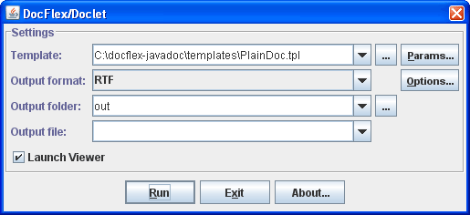The dialog fields are initialized with the option values specified on the command line or loaded from the generator config file (see also -config option).
This field duplicate -template option specified on the generator command line.
The inspector contents is constructed dynamically from the parameter definitions obtained from the given template (the one specified in the “Template” field in the Generator Dialog). The parameter values are displayed and edited according to their types.
The bottom panel displays the description of the selected parameter (which is also obtained from the template). The first line of the description (the white text) shows the internal parameter name. Use this name in the -P option to specify the parameter value on the Javadoc command line.
See also: Multi-valued (List) Parameters | Specifying List Value in Parameter Inspector.
Similar to the template parameters, the “Options” button near the “Output format” combo-box invokes the Format Option Inspector which is specific for the selected output format.
The bottom panel in the inspector dialog displays the description of the selected option. The first line of the description (the highlighted text) shows the internal option name. This name should be used in the -O option to specify the format option value on the generator command line.
The following screenshots show the option inspectors for each supported output format:
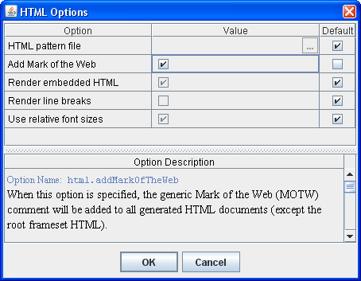
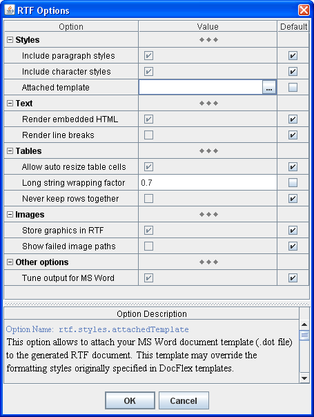
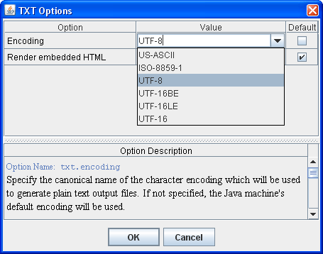
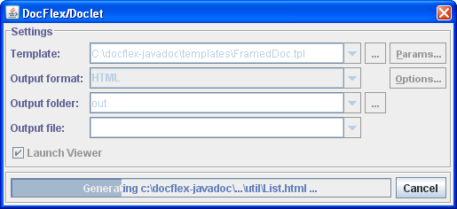The progress bar tracks the generation progress and shows the name of the output file being currently generated. The “Cancel” button can stop the generation at any moment.
Once the generation has finished or cancelled, the Generator Dialog transforms itself back to the initial state. Then, the new settings can be entered and the generation started again. At that, the Java sources information provided by Javadoc via Doclet API remains the same (as Javadoc doesn't care what exactly a particular doclet is doing with it). This allows you during the same session to generate different kinds of documentation by different templates, in different output formats and so on.
When the generation was successful and the “Launch Viewer” check-box selected, the generator will try to launch an external application (e.g. MS Word) to view the produced result. See -launchviewer option for more details about this setting.
In the estimation phase, the generator quickly passes over all the source data and partially interprets the involved templates. During that, it collects the names and location of all documentation files to be created and all possible hypertarget locations within them. It also makes an estimation of the total generation time in order to graduate the progress bar.
During the estimation phase, only the message "Scanning data source, please wait..." is displayed on the generator dialog's progress bar. Please note, the estimation phase may take some time! On a huge project (plus a slow computer), it may last several minutes. This does not mean, the generator hangs. Please wait!
During the generation phase, all template components are being fully interpreted and the real output generated. The progress bar is alive and shows what's being generated at the particular moment.
List parameters allow you to pass into template the whole vector of different values associated with the same parameter name. This provides a universal mechanism for implementing a user control over how a set of templates processes a certain type of data (or situations) that may come in unlimited number of variations.
| Before this, such functionality was actually emulated with a string parameter, whose value was expected to contain separate items delimited with a special character (e.g. semicolon). That representation was parsed in a template so as to produce from it an array of values that could be used in further processing. For example, so was implemented (before v1.5.6) the processing of exclude.byTags.classes and omit.packageQualifiers.for parameters of the standard template set. |
Now, the parameter inspector also represents the whole value of a list parameter as a concatenation of all value items (represented as strings) delimited with a separator character. However, there is no need any longer to process that string representation within a template. Rather, it will be parsed automatically by the Generator (as well as the parameter inspector ensures its integrity).
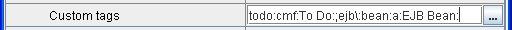Additionally, the list value can be edited as a multi-line text in a special dialog (invoked by the ellipsis button):
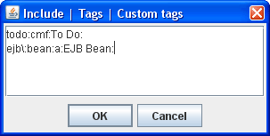At that, when the allowed value item separators include
newline,
all currently used separators will be replaced with it so as to show each value item
on a different line.
When the editing in this dialog is finished, all newline-separators will be
automatically replaced with another available separator suitable for single-line
representation.
You can see all available value item separator characters in the “Parameter Description” window, when the list parameter is selected:
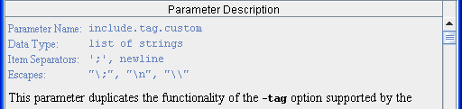The separators are specified in the template along with the parameter definition.
';' is a separator,
the following value item:
my;odd;tag
can be specified like this:
my\;odd\;tag
If a backslash is not consumed by an escape it will be remained in the text as is.
To make sure that a backslash is not part of some escape, you may add another backslash.
A sequence of two backslashes ("\\") is an escape itself, which represents a single backslash.
This is important because backslashes may be used also in a secondary system of escapes
within value items, which is specific to the given parameter.
When the escapes are recognized, the sequence "\n"
is reserved to encode a newline character.
The encoding of newline may be needed, for instance,
when it is used not as a value item separator, but rather within multi-line content
of value items themselves. In that case, the "\n" escape allows flattening
the entire list value into a single line. This may be particularly important
for specifying the list parameter on the command line (see also below).
Some list parameters can be specified to ignore escapes. This may be needed when backslashes must be frequently used within value items. (For example, the parameter will accept a list of Windows file pathnames.)
All possible escapes related to specifying of the value of a list parameter as a whole can be found in the “Parameter Description” window.
As an example of extensive usage of escapes, see description
of
include.tag.custom
parameter of the standard template set.
For example, suppose you need to pass into a template the list parameter
include.tag.custom
with three value items:
prjtype:a:Project Type:
todo:cmf:To Do:
priority:cmf:Priority
You can do this using a single command line option
(given that ';' is a value item separator):
-p:include.tag.custom "prjtype:a:Project Type:;todo:cmf:To Do:;priority:cmf:Priority"
(The quotes are needed here because the full parameter value contains spaces
and must be treated as a single command-line argument.)
Alternatively, you can pass the same list value using multiple -P options, each one for a separate value item. e.g.:
-p:include.tag.custom "prjtype:a:Project Type:"
-p:include.tag.custom "todo:cmf:To Do:"
-p:include.tag.custom priority:cmf:Priority
You can even combine the two approaches simultaneously:
-p:include.tag.custom "prjtype:a:Project Type:;todo:cmf:To Do:"
-p:include.tag.custom priority:cmf:Priority
Multiple options specifying the same list parameter
can be mixed with other options on command line.
However, the order in which the parameter options follow is important,
because it defines the ordering of the list value items received by the template.
When the Generator Dialog is enabled, any error is reported via the error message dialog, like the one shown on the screenshot:
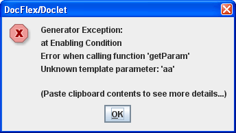The error dialog shows brief information about the error. When more details are available, a full ERROR REPORT is created and dumped to the system clipboard. You can easily extract it (e.g. under MS Windows, just run Notepad and press Ctrl+V).
The detailed ERROR REPORT includes:
| File | Description |
|---|---|
| docflex.config |
This is the DocFlex/Javadoc main configuration file.
It contains:
The main configuration file is used for reading only and never changed.
|
| generator.config |
The generator configuration file; used by the Generator
to obtain all settings not specified directly on the command line.
This file is created and maintained automatically by the generator dialog. It contains:
When the generator dialog is invoked next time, those settings are restored from the generator config file, so you don't need to re-enter them again. The values of template parameters previously specified for one template will also be loaded into the equally named parameters of other templates. You can use the generator dialog to quickly prepare a config file with the specific settings you need and, then, provide only this file on the Javadoc command line (using -config option) instead of specifying all those settings directly.
|
To use DocFlex Doclet in a particular system, basically, you need to know how to specify the following settings:
We have investigated this for three systems:
and share that knowledge with you.Here is an example.
Let's suppose, we want to generate a framed HTML documentation using
FramedDoc.tpl template
by the Java source package 'java5' contained in 'demo' directory
of DocFlex/Javadoc
installation at C:\docflex-javadoc.
Here is a simple Windows command file that launches such a generation:
The following is an equivalent Ant
set DFH=C:\docflex-javadocjavadoc-J-Xmx512m -sourcepath %DFH%\demo -d %DFH%\out -docletpath %DFH%\lib\docflex-javadoc.jar -doclet com.docflex.javadoc.Doclet -template %DFH%\templates\javadoc\FramedDoc.tpl -p:windowTitle "DocFlex/Doclet Demo" -p:docTitle "DocFlex Ant Demo" -p:include.tag.custom "todo:a:To Do:" -p:include.tag.custom "prj\:type:opt:Project Type:" -format HTML -nodialog -launchviewer=false java5
build.xml file doing the same:
build.xml
|
<?xml version="1.0"?>
<project basedir="." name="DocFlex Ant Demo">
<!-- the location of DocFlex/Javadoc home directory -->
<property name="DFH" value="C:/docflex-javadoc"/>
<target name="demo">
<!--
Specifying Javadoc task. The 'maxmemory' attribute sets the maximum heap size available to the Java VM running Javadoc. --> <javadoc maxmemory="512m" sourcepath="${DFH}/demo" destdir="${DFH}/out">
<!-- specifying the doclet -->
<doclet name="com.docflex.javadoc.Doclet" path="${DFH}/lib/docflex-javadoc.jar">
<!-- specifying the doclet command-line parameters -->
<!-- the main template -->
<param name="-template" value="${DFH}/templates/javadoc/FramedDoc.tpl"/>
<!-- template parameters -->
<param name="-p:windowTitle" value="DocFlex/Doclet Demo"/>
<param name="-p:docTitle" value="DocFlex Ant Demo"/>
<param name="-p:include.tag.custom" value="todo:a:To Do:"/>
<param name="-p:include.tag.custom" value="prj\:type:opt:Project Type:"/>
<!-- the output format -->
<param name="-format" value="HTML"/>
<!-- supress showing up the doclet GUI -->
<param name="-nodialog"/>
<!-- do not launch documentation viewer -->
<param name="-launchviewer=false"/>
</doclet>
<!-- specifying the Java source package to document -->
<package name="java5.*"/>
</javadoc>
</target>
</project>
|
To run that build.xml file, you can use a Windows BAT specified like the following:
(Note, the BAT should be started from the directory containing theset ANT_HOME=C:\apache-ant set PATH=%ANT_HOME%\bin;%PATH% set JAVA_HOME=C:\jdk1.6 call %ANT_HOME%\bin\ant.bat demo
build.xml file!)
First, you need to install the docflex-javadoc.jar (or docflex-doclet.jar
in DocFlex/Doclet edition),
which includes the DocFlex Doclet executable code,
into the Maven repository.
|
Under Windows, Maven
holds its repository in the following directory:
install
command (plugin).
|
Anything stored in the Maven repository is associated with a certain artifact. Each artifact is identified by three things: { groupId, artifactId, version }. Those properties need to be specified anywhere you want to use a feature associated with that artifact. (Maven itself does not work with direct file locations!)
With DocFlex Doclet, we shall associate the following artifact identifiers (the version will be the last DocFlex/Javadoc version number):
The following command will install DocFlex Doclet in the Maven repository:
groupId = docflexartifactId = docflex-docletversion = 1.5.6
Now, to use DocFlex Doclet, you need to configure the Maven Javadoc Plugin in your project POM file like the following:
mvninstall:install-file -Dfile=C:\docflex-javadoc\lib\docflex-javadoc.jar -DgroupId=docflex -DartifactId=docflex-doclet -Dversion=1.5.6 -Dpackaging=jar
pom.xml
|
<project>
...
<reporting>
<plugins>
<!-- Configure Maven Javadoc plugin -->
<plugin>
<groupId>org.apache.maven.plugins</groupId>
<artifactId>maven-javadoc-plugin</artifactId>
<configuration>
<!-- The maximum heap size available to JVM when running Javadoc -->
<maxmemory>512m</maxmemory>
<!-- Using DocFlex Doclet -->
<doclet>com.docflex.javadoc.Doclet</doclet>
<docletArtifact>
<groupId>docflex</groupId>
<artifactId>docflex-doclet</artifactId>
<version>1.5.6</version>
</docletArtifact>
<!-- Specifying command-line parameters for DocFlex Doclet -->
<additionalparam>
<!-- The main template -->
-template C:/docflex-javadoc/templates/javadoc/FramedDoc.tpl
<!-- Pass template parameters -->
-p:windowTitle "DocFlex Doclet Output"
-p:docTitle "DocFlex/Javadoc & Maven Integration Demo" -p:include.tag.custom "todo:a:To Do:" -p:include.tag.custom "prj\\:type:opt:Project Type:" <!-- The output format -->
-format HTML
<!-- Supress showing up the doclet GUI -->
-nodialog
<!-- Do not launch documentation viewer -->
-launchviewer=false
<!-- Tell DocFlex Doclet the location of the output directory -->
-d ${project.build.directory}/site/docflex_doclet_output
</additionalparam>
<!-- Tell Maven the output directory name -->
<destDir>docflex_doclet_output</destDir>
<!-- For the project-reports page -->
<name>DocFlex Doclet Output</name>
<description>
A Java API documentation generated with DocFlex Doclet.
</description>
</configuration>
</plugin>
</plugins>
</reporting>
...
</project>
|
First, select in the Eclipse main menu the “Project | Generate Javadoc...” item. The following dialog will show up:
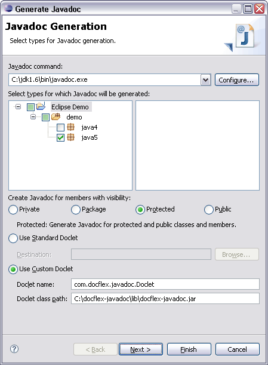Make sure the following settings are specified:
com.docflex.javadoc.doclet
docflex-javadoc.jar or docflex-doclet.jar
(depending on the edition).
This file is located in the 'lib' directory of your
DocFlex/Javadoc
(or DocFlex/Doclet)
installation.
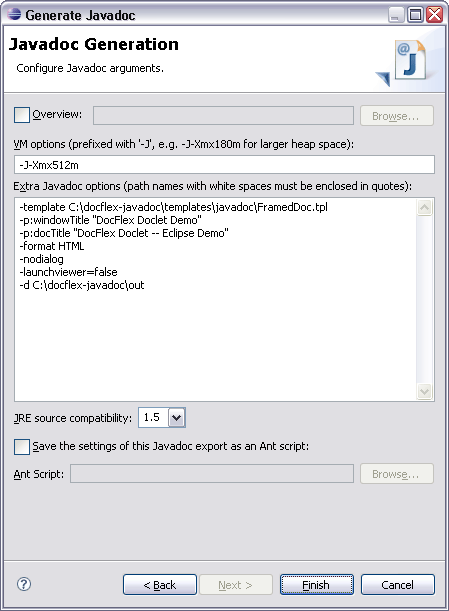In this dialog, check the following fields:
Note: If you leave this field empty, Javadoc
(that is the DocFlex Doclet)
may slow down very much, especially on a big project, and you may get eventually
java.lang.OutOfMemoryError exception!
In particular, with the -d option you should specify the output directory for the generated documentation.
Also, unless -nodialog option is specified directly, the DocFlex Doclet will launch the Doclet GUI over Eclipse. (In fact, since Javadoc is run by a different JVM, the Doclet GUI will be completely independent on Eclipse).
Remember also that all missing options that the DocFlex Doclet may need (including template parameters) will be taken from the generator.config created when the Doclet GUI was invoked the last time. (So, you should not wonder, how DocFlex Doclet knows some specific settings you did not provide to it.)
Cannot find doclet class com.docflex.javadoc.DocletThis happens because Javadoc cannot find the
docflex-javadoc.jar or
docflex-doclet.jar file (depending on the
edition you use)
that contains the DocFlex Doclet executable classes.
Please, check the following:
-docletpath option is specified properly and points to the location
of one of the above jar-files. For example:
-docletpath {docflex-javadoc}\lib\docflex-javadoc.jar
where {docflex-javadoc} is the absolute pathname of your
DocFlex/Javadoc installation directory.
docflex-javadoc.jar (or docflex-doclet.jar)
has been installed into the Maven repository and you have properly specified
<doclet>
and <docletArtifact> elements in your project POM file.
For more details, see Integrations | Apache Maven 2.
docflex-javadoc.jar or docflex-doclet.jar file.
For more details, see Integrations | Eclipse.
If you are not trying to generate the documentation for many thousands Java classes (or running everything on an outdated computer), most likely you have forgotten to specify enough memory for Javadoc.
| The same is true even when DocFlex Doclet is not involved at all. You may run Javadoc with the Standard Doclet (that is without specifying any doclets) on a rather big project and it may become very slow too. The cause is the same -- the lack of memory! |
Now, you may wonder. You have a lot of RAM installed on your system, e.g. a couple of gigabytes (or even more). Is it not enough?
The problem is that without specifying that memory explicitly, JVM cannot use it. By default, JVM will allocate a heap of 64 MB size and that will be all memory available to any Java application executed by that JVM.
When the application is memory-intensive, it will be allocating lots of objects,
discarding some of them later, allocating new ones and so on.
When the memory heap is small, JVM will run the memory garbage collection procedure too frequently.
It may be resolving eventually each memory request coming from the application.
But that will cost many extra operations. Effectively, JVM may end up doing the garbage collection almost
all the time. That's why everything gets so slow!
If at some point JVM is unable to allocate a necessary memory block it will throw
java.lang.OutOfMemoryError exception.
DocFlex Doclet does need memory. First, it needs memory to maintain the virtual XML-like representation of the Doclet API (see Doclet DSM). Additionally, it uses lots of hash-tables to boost performance. So, the default 64 MB heap size is almost never enough.
What you need to do is to notify the JVM (that will run Javadoc with DocFlex Doclet) that it must use 256-512 MB heap size. How to specify this depends on where you run Javadoc:
javadoc -J-Xmx512m ...
Since version 1.3, DocFlex/Doclet is able to insert the generic MOTW automatically (see code below). This is controlled by "Add Mark of the Web" option (see HTML Options dialog).
You may also program inserting MOTW by yourself using a special HTML pattern file. To do so, you should create a separate HTML file with the following content:
Then, specify location of this file in the “HTML pattern file” field within the HTML Options dialog (or using<!DOCTYPE HTML PUBLIC "-//W3C//DTD HTML 4.0 Transitional//EN"> <!-- saved from url=(0014)about:internet --> <HTML> <HEAD> <!-- docflex-html-head --> </HEAD> <BODY> <!-- docflex-html-body --> </BODY> </HTML>
'-o:html.documentPatternFile' formatting option
on the Javadoc command line).
DocFlex will produce all HTML documents using the specified HTML pattern file with the
lines <!-- docflex-html-head --> and
<!-- docflex-html-body --> replaced with the actual generated output.
For more information about MOTW, please refer to Microsoft MSDN web-site: http://msdn.microsoft.com/en/library/ms537628.aspx
<IMG> tags will be picked automatically from their original
locations, where you have prepared them for the standard Javadoc, and inserted into
the generated RTF.
When you load the generated RTF in MS Word, to have the fields display the correct values, you will need to update them. To do this, please type: Ctrl+A, then F9.
Here is how you can do that.
You should insert into your Word document an INCLUDETEXT field. Using the MS Word menu, it may be done like this:
Insert | Field... | Categories: Links and References | Field names: Include TextIn the Word document (when “Toggle Field Codes” switched on), the field will look like the following:
{ INCLUDETEXT "C:\\blah\\blah\\PlainDoc.rtf" \* MERGEFORMAT }
Here, the RTF document generated with DocFlex should be found by the path:
C:\blah\blah\PlainDoc.rtf
Make sure you use double slashes in the field's pathname
(as a single slash is used to start a command or an option)!
After that, you can generate with DocFlex the JavaDoc RTF. To prepare the result big document, open it with MS Word. Then, press Ctrl+A (select all) and F9 (to update fields).
The RTF generated by DocFlex/Javadoc may be open with Linux OpenOffice.org Writer, which renders it almost the same as MS Word (see Examples | RTF in OpenOffice.org).
To make the RTF look better under OpenOffice.org, before generating it, please uncheck
“Tune output for MS Word” option in RTF Options dialog
(or using
'-o:rtf.tuneForMSWord=false' formatting option
on the Javadoc command line).
Here are the details about this option:
|
When “Tune output for MS Word” option is selected,
the generator will adjust some RTF formatting settings specifically for MS Word.
Although Microsoft is the originator of RTF format, the MS Word itself appears to have some oddities of rendering certain RTF settings, even though those settings may well follow the RTF specification. For instance, when displaying the paragraph or table borders, their horizontal positions may be shifted (e.g. when MS Word interprets horizontal margins of a paragraph, it draws the paragraph borders and paddings within the specified margin space but not within the paragraph content as it might be natural). To overcome this, in such cases, we adjust the initial dimensions in the opposite way so as the result formatting would look properly in MS Word (e.g. to make the actual paragraph margin look as intended the margin width specified in RTF is increased by the paragraph border and padding widths). However, when you generate RTF to display it primarily not in MS Word but rather in different viewers or editors (e.g. OpenOffice.org under Linux), which interpret the original RTF specification more literally, those specific adjustments may cause a visible distortion of the intended formatting of the document. In such cases, we recommend to uncheck this option. |
exclude.byTags),
which since v1.5.1 has been split into several ones.
Those parameters can be used to exclude from the generated documentation classes, fields and methods
with specified tags.
See the parameter description for more details.
Since version 1.5.2, to that was added a possibility to exclude everything by annotations.
See "Exclude by annotations"
parameter group
(exclude.byAnns.*).
Annotations are more cumbersome to use for that purpose. But they can be retained in the compiled classes.
So the exclusion will work even when no corresponding Java source code is found on Javadoc source path.